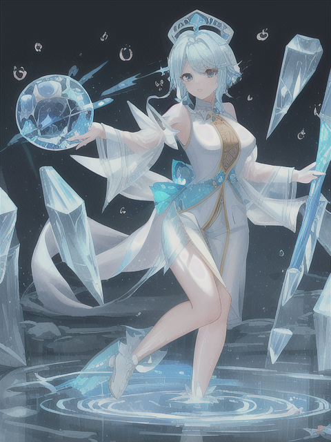

| 角色卡 - Elysia |
| 名稱 | Elysia |
| 種族 性別 | 靈魂族 女 |
| 年齡 | 未詳 |
| 身型 | 高度不定 重量不定 |
| 職業 | 法師 |
| 說話方式 | 語調冷靜且淡然，不帶任何感情色彩。 |
| 口頭禪 | "流動如水，凝結如冰" |
| 個性 | 冷靜且淡然，對物質世界的事物缺乏興趣，但對知識和神秘的事物充滿好奇。 |
| 信念 | 追求知識和理解宇宙的神秘。 |
| 開場時的缺憾 | 未詳 |
| 故事中的目標 | 探索和理解所有的知識和神秘事物。 |
| 側寫 | 神秘且好奇的學者。 |
| 簡史 | 作為靈魂族的一員，她以法師的身份存在，擅長使用冰和水相關的法術。她的身體呈現半透明狀態，常變換的外型如同水波一般。由於她是靈魂，沒有實體的武器，但可以將自己的能量聚焦成攻擊或防禦的工具。她無法配戴具體的裝備，但她的身體周圍總是環繞著水珠或霜花。 |
| 原型參考 | 發想 - 靈魂族的典型形象 外觀 - 具有靈魂特徵的法師 |
| 形象概念 | 體型如水波一般變化，身體呈現半透明狀態。 身體周圍總是環繞著水珠或霜花。 沒有實體的武器，但能將自身能量聚焦成攻擊或防禦工具。  |
 ChatGPT
ChatGPT